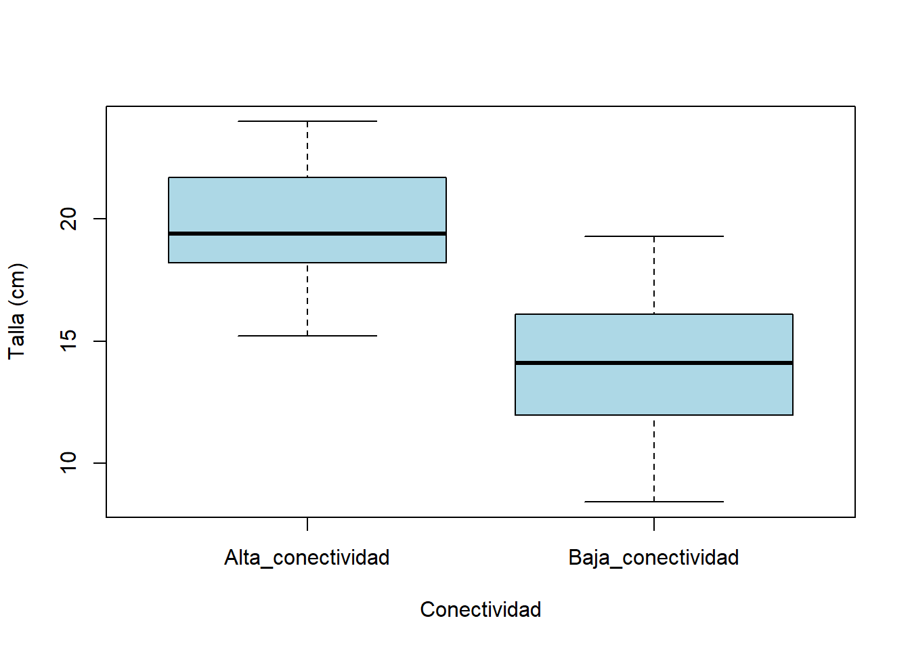
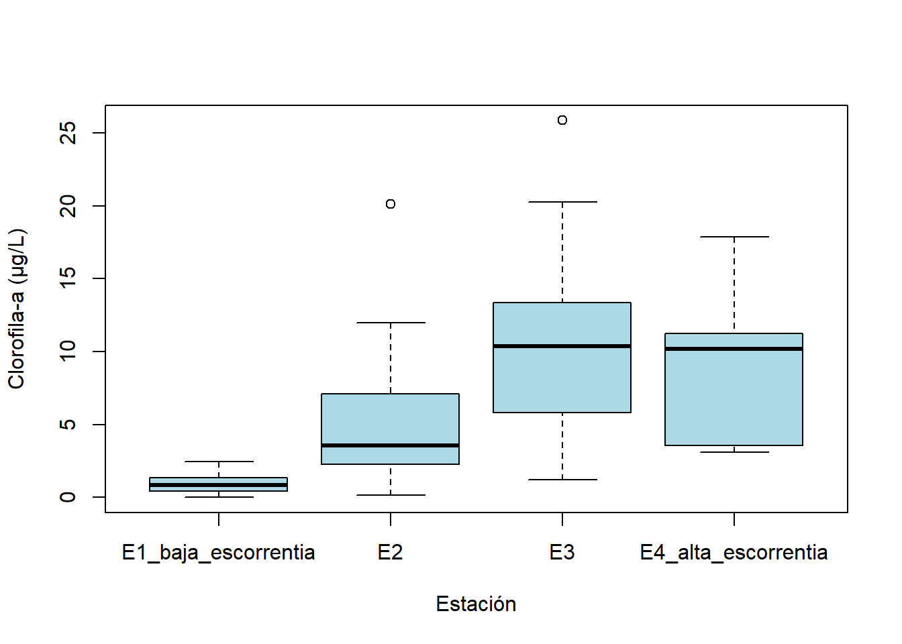

Cómo usar esta guía
Esta guía complementa el Taller 2 y su cuestionario de opción múltiple — no los reemplaza. Aquí el objetivo es distinto: en el Taller 1 se practicó cómo proponer un diseño y detectar fallas de diseño; en esta guía se hace lo mismo, pero del lado del análisis: elegir e implementar correctamente la prueba de inferencia, y reconocer los errores de interpretación que con más frecuencia arruinan un análisis por lo demás bien diseñado.
- Parte A — Elección e implementación: 4 escenarios nuevos. De entrada no se indica si hace falta un t-test, un ANOVA, una prueba no paramétrica, o un cálculo de potencia.
- Parte B — Identificación del error: 4 viñetas de análisis ya “hechos”, cada una con un error de inferencia distinto — no de diseño (eso ya se trabajó en la guía del Taller 1), sino de cómo se interpretó o ejecutó el análisis.
Cada ejercicio guarda su respuesta en un bloque colapsable — se recomienda intentar resolverlo antes de abrirlo.
Código
# library(tidyverse) # descomentar si se tiene instaladoParte A — Elección e implementación de la prueba correcta
A1 — Talla de pargo y conectividad del manglar
NotaEl contexto
Un equipo quiere saber si la talla de juveniles de pargo (Lutjanus spp.) difiere entre manglares con alta y baja conectividad a praderas de pastos marinos cercanas. Se midieron 15 juveniles en cada tipo de manglar.
- ¿Cuántos grupos hay, y qué tipo de prueba de la tabla de síntesis del taller se considera de entrada?
- ¿Qué se necesita revisar antes de confiar en el resultado?
Código
set.seed(42)
manglar <- gl(2, 15, labels = c("Alta_conectividad", "Baja_conectividad"))
talla_pargo <- round(rnorm(30, mean = c(18.5, 14.8)[as.integer(manglar)], sd = 2.4), 1)
pargo_talla <- data.frame(manglar, talla_pargo)
boxplot(talla_pargo ~ manglar, data = pargo_talla, col = "lightblue",
xlab = "Conectividad", ylab = "Talla (cm)")
TipVerificación del razonamiento
2 grupos → t-test. Antes de correr cualquier análisis, se revisan las varianzas de cada grupo:
Código
tapply(pargo_talla$talla_pargo, pargo_talla$manglar, sd)Alta_conectividad Baja_conectividad
2.456149 3.257884 Son razonablemente parecidas, pero no hace falta decidir “a mano” si se usa Welch — t.test() en R lo aplica por defecto:
Código
t.test(talla_pargo ~ manglar, data = pargo_talla)
Welch Two Sample t-test
data: talla_pargo by manglar
t = 5.3981, df = 26.029, p-value = 1.175e-05
alternative hypothesis: true difference in means between group Alta_conectividad and group Baja_conectividad is not equal to 0
95 percent confidence interval:
3.521377 7.851956
sample estimates:
mean in group Alta_conectividad mean in group Baja_conectividad
19.65333 13.96667 El resultado es claramente significativo (p = 1.18e-05): los juveniles en manglares de alta conectividad son en promedio más grandes. Con solo 2 grupos, siempre se corre el mismo t.test() — la corrección de Welch va incluida, se revise o no la homocedasticidad primero.
A2 — Densidad de erizos antes y después de una mortalidad masiva
NotaEl contexto
Tras un evento de mortalidad masiva (die-off) por una posible enfermedad, un equipo regresó a los mismos 10 sitios donde ya tenía datos de densidad de erizos (Diadema antillarum) previos al evento, y volvió a censar.
- ¿Las dos mediciones son de sitios independientes, o del mismo sitio dos veces?
- ¿Qué prueba corresponde?
Código
set.seed(2026)
n_sitios2 <- 10
densidad_antes <- round(rnorm(n_sitios2, mean = 12, sd = 3), 1)
mortalidad <- round(rnorm(n_sitios2, mean = 7, sd = 2), 1)
densidad_despues <- round(pmax(0, densidad_antes - mortalidad), 1)
erizos_dieoff <- data.frame(sitio = paste0("S", 1:n_sitios2), densidad_antes, densidad_despues)
erizos_dieoff sitio densidad_antes densidad_despues
1 S1 13.6 7.4
2 S2 8.8 3.3
3 S3 12.4 5.8
4 S4 11.7 5.2
5 S5 10.0 8.1
6 S6 4.5 0.0
7 S7 9.8 1.6
8 S8 8.9 1.5
9 S9 12.3 6.9
10 S10 10.6 2.2
TipVerificación del razonamiento
Mismo sitio, medido dos veces → t-test pareado.
Código
t.test(erizos_dieoff$densidad_antes, erizos_dieoff$densidad_despues, paired = TRUE)
Paired t-test
data: erizos_dieoff$densidad_antes and erizos_dieoff$densidad_despues
t = 10.031, df = 9, p-value = 3.486e-06
alternative hypothesis: true mean difference is not equal to 0
95 percent confidence interval:
4.693437 7.426563
sample estimates:
mean difference
6.06 t = 10.03, p = 3.5e-06 — caída clara y consistente en la densidad tras el evento. En la Parte B de esta guía (B3) se verá qué tan distinto habría salido el resultado si se hubiera ignorado el pareo.
A3 — Clorofila-a en cuatro estaciones de una bahía
NotaEl contexto
Un equipo de monitoreo mide la concentración de clorofila-a (indicador de eutrofización) en 4 estaciones de una bahía, con distinta influencia de escorrentía continental. Este tipo de variable ambiental suele tener una distribución muy asimétrica (muchos valores bajos, unos pocos muy altos).
- ¿Cuántos grupos hay, y qué prueba se consideraría de entrada?
- Antes de confiar en esa prueba, ¿qué se tiene que revisar — y qué se haría si falla?
Código
set.seed(2026)
estacion <- gl(4, 9, labels = c("E1_baja_escorrentia", "E2", "E3", "E4_alta_escorrentia"))
lambda_chl <- c(3, 6, 10, 18)[as.integer(estacion)]
clorofila <- round(rgamma(36, shape = 0.8, rate = 0.8/lambda_chl), 2)
bahia_chl <- data.frame(estacion, clorofila)
boxplot(clorofila ~ estacion, data = bahia_chl, col = "lightblue",
xlab = "Estación", ylab = "Clorofila-a (µg/L)")
TipVerificación del razonamiento
4 grupos → candidato inicial: ANOVA. Pero primero se revisa:
Código
mod_a3t2 <- aov(clorofila ~ estacion, data = bahia_chl)
shapiro.test(residuals(mod_a3t2))
Shapiro-Wilk normality test
data: residuals(mod_a3t2)
W = 0.92498, p-value = 0.01768Código
bartlett.test(clorofila ~ estacion, data = bahia_chl)
Bartlett test of homogeneity of variances
data: clorofila by estacion
Bartlett's K-squared = 22.164, df = 3, p-value = 6.03e-05Ambos fallan — normalidad y homocedasticidad (algo muy típico en variables ambientales con distribución muy sesgada, como concentraciones o conteos). A diferencia del caso del Taller 2 (Parte 8, pargo y conectividad), donde solo fallaba la homocedasticidad, aquí falla también la normalidad — así que ni el ANOVA clásico ni el ANOVA de Welch son apropiados. La alternativa correcta es Kruskal-Wallis:
Código
kruskal.test(clorofila ~ estacion, data = bahia_chl)
Kruskal-Wallis rank sum test
data: clorofila by estacion
Kruskal-Wallis chi-squared = 17.777, df = 3, p-value = 0.000489p = 0.00049 — diferencias claras entre estaciones. Kruskal-Wallis no exige normalidad, pero sí es sensible a dispersiones muy distintas entre grupos (aquí la desviación estándar va de 0,9 en E1 a 7,7 en E3). Por eso se interpreta como “las distribuciones de clorofila difieren entre estaciones”, no estrictamente como diferencias de medianas. Para variables continuas, positivas y asimétricas como esta, la alternativa más completa es un GLM con distribución Gamma, que se verá en la Semana 2.
A4 — Planeando un estudio: dragado y cobertura de pastos marinos
NotaEl contexto
Antes de salir a campo, un equipo quiere saber cuántas parcelas necesita por grupo para detectar una diferencia de 8 puntos porcentuales de cobertura de pastos marinos entre zonas con y sin actividad de dragado reciente, con una potencia del 80%. Un estudio piloto previo, en un sistema similar, reportó una desviación estándar de 11 puntos porcentuales.
- ¿Qué función de R (de las usadas en la Parte 7 del taller) responde esta pregunta?
- ¿Qué le pasaría al
nnecesario si la variabilidad del sistema fuera mayor (sd = 15 en vez de 11)?
TipVerificación del razonamiento
Código
power.t.test(delta = 8, sd = 11, sig.level = 0.05, power = 0.80)
Two-sample t test power calculation
n = 30.66918
delta = 8
sd = 11
sig.level = 0.05
power = 0.8
alternative = two.sided
NOTE: n is number in *each* groupn ≈ 31 parcelas por grupo. Se compara con una variabilidad mayor:
Código
power.t.test(delta = 8, sd = 15, sig.level = 0.05, power = 0.80)
Two-sample t test power calculation
n = 56.16413
delta = 8
sd = 15
sig.level = 0.05
power = 0.8
alternative = two.sided
NOTE: n is number in *each* groupCon sd = 15, el n necesario sube a ≈57 por grupo — más del doble. Cuanto más “ruidoso” es el sistema, más réplicas se necesitan para detectar la misma diferencia con la misma confianza. Por eso vale la pena usar la variabilidad de un piloto real (o de la literatura de la línea de investigación) en vez de inventar un número.
Parte B — Identificación del error: diagnóstico de errores de inferencia
Cada viñeta muestra un análisis ya “corrido”. Conviene identificar qué está mal antes de ver la respuesta.
B1 — Tiempo de manipuleo en tres zonas de pesca
NotaLa viñeta
Un investigador compara el tiempo de manipuleo de la captura entre pesca artesanal, semi-industrial e industrial (3 zonas). Sin revisar ningún supuesto, corrió directamente un ANOVA de una vía, obtuvo p = 0.0585, y concluyó que no hay diferencias entre tipos de pesca.
Código
set.seed(1)
zona_pesca <- gl(3, 12, labels = c("Artesanal", "Semi_industrial", "Industrial"))
lambda_b1 <- c(4, 9, 7)[as.integer(zona_pesca)]
tiempo_manipuleo <- round(rexp(36, rate = 1/lambda_b1), 1)
manipuleo <- data.frame(zona_pesca, tiempo_manipuleo)- ¿Qué le faltó revisar antes de confiar en ese ANOVA?
- ¿Cambia la conclusión si se revisa?
TipVerificación del razonamiento
Error: se saltó el diagnóstico de normalidad. El tiempo de manipuleo, como muchas variables de tiempo, tiene una distribución muy sesgada (no negativa, cola larga a la derecha) — exactamente el tipo de variable que rara vez es normal.
Código
mod_b1t2 <- aov(tiempo_manipuleo ~ zona_pesca, data = manipuleo)
shapiro.test(residuals(mod_b1t2))
Shapiro-Wilk normality test
data: residuals(mod_b1t2)
W = 0.78079, p-value = 6.918e-06W bajo, p = 6.9e-06 — normalidad claramente violada. Con eso en mente, la prueba correcta es Kruskal-Wallis, no el ANOVA que ya se corrió:
Código
kruskal.test(tiempo_manipuleo ~ zona_pesca, data = manipuleo)
Kruskal-Wallis rank sum test
data: tiempo_manipuleo by zona_pesca
Kruskal-Wallis chi-squared = 7.661, df = 2, p-value = 0.0217La conclusión cambia: el ANOVA (mal aplicado) daba p = 0.0585, “no significativo” — pero Kruskal-Wallis, la prueba que sí respeta la falta de normalidad, da p = 0.0217, significativo. Al saltarse el diagnóstico, el investigador estuvo a punto de perderse un efecto real.
B2 — “No significativo” interpretado como “no hay efecto”
NotaLa viñeta
Un equipo comparó un sitio control contra un sitio con impacto antrópico reciente, con solo 6 réplicas por grupo (limitación de tiempo de campo). El t-test dio p = 0.25, y el equipo concluyó en su informe: “no hay evidencia de que el impacto antrópico afecte la variable medida”.
Código
set.seed(2026)
n_chico <- 6
sitio_control <- round(rnorm(n_chico, mean = 40, sd = 9), 1)
sitio_impacto <- round(rnorm(n_chico, mean = 34, sd = 9), 1)- Con solo 6 réplicas por grupo, ¿qué tan probable es que el estudio detecte un efecto moderado aunque exista de verdad?
- ¿Es correcto decir que “no hay efecto”, o sería más preciso decir otra cosa?
TipVerificación del razonamiento
Error: confundir “no se encontró evidencia significativa” con “se demostró que no hay efecto”. Un p-valor alto no prueba la hipótesis nula — solo dice que, con estos datos, no hubo evidencia suficiente para rechazarla.
Código
t.test(sitio_control, sitio_impacto)
Welch Two Sample t-test
data: sitio_control and sitio_impacto
t = 1.2647, df = 6.2416, p-value = 0.2511
alternative hypothesis: true difference in means is not equal to 0
95 percent confidence interval:
-4.935147 15.701814
sample estimates:
mean of x mean of y
34.48333 29.10000 Con n = 6 por grupo, se calcula qué tan probable era detectar una diferencia real de esa magnitud:
Código
power.t.test(n = n_chico, delta = 6, sd = 9, sig.level = 0.05)
Two-sample t test power calculation
n = 6
delta = 6
sd = 9
sig.level = 0.05
power = 0.1805033
alternative = two.sided
NOTE: n is number in *each* groupPotencia ≈ 18%. Con esa potencia, aunque el impacto antrópico sí tuviera un efecto real de esa magnitud, el estudio tenía más de 4 de cada 5 probabilidades de no detectarlo. La conclusión correcta no es “no hay efecto” — es “este estudio, con este tamaño de muestra, no tuvo potencia suficiente para detectar un efecto de esta magnitud si existiera”. La diferencia es enorme para un informe técnico o un artículo.
B3 — Ignorar el pareo
NotaLa viñeta
Retomando el diseño de A2 (mismos sitios, antes/después), un asistente de investigación analizó los datos con un t-test de dos muestras independientes, en vez de pareado, “porque son solo dos columnas de números”.
Código
set.seed(2026)
n_par <- 10
antes_b3 <- round(rnorm(n_par, mean = 25, sd = 6), 1)
cambio_b3 <- round(rnorm(n_par, mean = 5, sd = 1.5), 1)
despues_b3 <- round(antes_b3 - cambio_b3, 1)- ¿Qué información usa el t-test pareado que el independiente ignora por completo?
- ¿Qué se espera que le pase a la conclusión si se tratan datos pareados como independientes?
TipVerificación del razonamiento
Error: tratar datos pareados (mismo sitio medido dos veces) como si fueran dos grupos independientes. El t-test independiente ignora que cada par de valores viene del mismo sitio — trata la variabilidad entre sitios como si fuera parte del “ruido” de la comparación, cuando en realidad no tiene nada que ver con el cambio antes/después.
Código
cat("Pareado (correcto):\n")Pareado (correcto):Código
t.test(antes_b3, despues_b3, paired = TRUE)
Paired t-test
data: antes_b3 and despues_b3
t = 9.3657, df = 9, p-value = 6.157e-06
alternative hypothesis: true mean difference is not equal to 0
95 percent confidence interval:
3.557188 5.822812
sample estimates:
mean difference
4.69 Código
cat("\nIndependiente (incorrecto):\n")
Independiente (incorrecto):Código
t.test(antes_b3, despues_b3, paired = FALSE)
Welch Two Sample t-test
data: antes_b3 and despues_b3
t = 1.874, df = 17.622, p-value = 0.07761
alternative hypothesis: true difference in means is not equal to 0
95 percent confidence interval:
-0.5760885 9.9560885
sample estimates:
mean of x mean of y
21.52 16.83 La conclusión cambia por completo: pareado da p = 6.2e-06 (altamente significativo); tratado como independiente da p = 0.078, no significativo al nivel usual de 0.05. Con los mismos datos, el error de no parear pudo haber llevado a reportar “no hay evidencia de cambio” cuando en realidad el cambio es muy claro — simplemente estaba oculto por la variabilidad entre sitios, que el pareo remueve.
B4 — Comparaciones múltiples sin corrección
NotaLa viñeta
Un estudiante compara una variable entre 4 grupos experimentales. En vez de correr un solo ANOVA, decidió correr un t-test independiente para cada par posible de grupos (6 comparaciones en total), y reportó como “hallazgo” la única comparación que dio p < 0.05.
Código
set.seed(2026)
grupo_b4 <- gl(4, 10, labels = c("G1", "G2", "G3", "G4"))
valor_b4 <- round(rnorm(40, mean = 20, sd = 5), 1)
datos_b4 <- data.frame(grupo_b4, valor_b4)- Si se repite una prueba con α = 0.05 muchas veces, aunque no exista ningún efecto real, ¿qué probabilidad hay de que al menos una salga “significativa” solo por azar?
- ¿Qué debió haberse corrido en su lugar?
TipVerificación del razonamiento
Error: comparaciones múltiples sin corrección, inflando el error tipo I. Cada t-test individual tiene 5% de probabilidad de un falso positivo — pero con 6 comparaciones, la probabilidad de que al menos una salga significativa por puro azar es mucho mayor a 5%.
En esta simulación, no se programó ninguna diferencia real entre los 4 grupos (misma media, mismo sd). Aun así:
Código
niveles <- levels(grupo_b4)
pares <- combn(niveles, 2)
ps <- apply(pares, 2, function(p) {
t.test(valor_b4[grupo_b4 == p[1]], valor_b4[grupo_b4 == p[2]])$p.value
})
names(ps) <- apply(pares, 2, paste, collapse = " vs ")
round(ps, 4)G1 vs G2 G1 vs G3 G1 vs G4 G2 vs G3 G2 vs G4 G3 vs G4
0.3996 0.0192 0.0848 0.1279 0.5253 0.2260 Una comparación (G1 vs G3) sale “significativa” (p = 0.019) — puro azar, disfrazado de hallazgo. El ANOVA de una vía, la prueba diseñada para comparar los 4 grupos a la vez con un solo error tipo I controlado, correctamente no detecta diferencias:
Código
summary(aov(valor_b4 ~ grupo_b4, data = datos_b4)) Df Sum Sq Mean Sq F value Pr(>F)
grupo_b4 3 174.3 58.11 2.624 0.0654 .
Residuals 36 797.3 22.15
---
Signif. codes: 0 '***' 0.001 '**' 0.01 '*' 0.05 '.' 0.1 ' ' 1La lección: cuando se quiere comparar más de 2 grupos, se corre primero un ANOVA (o Kruskal-Wallis), no una serie de t-tests de a pares. Si el ANOVA es significativo y se necesita saber cuáles pares difieren, existen comparaciones post-hoc (como TukeyHSD(), que se usa en la Parte 4 del Taller 2) diseñadas específicamente para controlar el error acumulado — correr t-tests sueltos no lo hace.
Cierre
Estos 8 ejercicios apuntan a la misma habilidad desde ángulos distintos: elegir la herramienta de inferencia correcta para cada pregunta, y reconocer cuándo un análisis —propio o ajeno— tiene un problema que ningún p-valor bonito puede tapar. Es exactamente el tipo de revisión que un jurado de tesis, o un revisor de artículo, le hará al propio trabajo — mejor practicarlo ahora, con datos simulados, que descubrirlo tarde con los datos propios.
Referencias
Los escenarios de esta guía son de elaboración propia para este curso; no reproducen ejercicios ni datos de las fuentes citadas en el Taller 2.